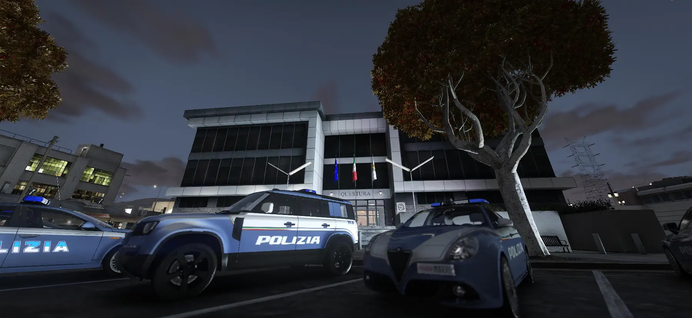
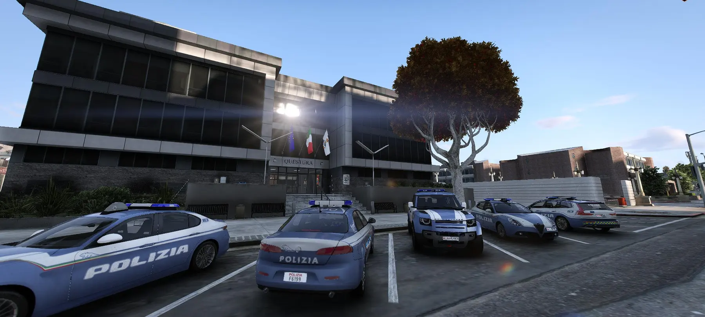

Home

Italian Paradise XI · Questura
Lo sportello della Polizia di Stato, online.
Denunce, porto d’armi e colloqui con i dirigenti. Ogni pratica ha un codice e uno stato sempre consultabile.
Caricamento…
Hai un codice? Inseriscilo qui.
Caricamento…
Come funziona
- 1Compila il modulo
Scegli il servizio e inserisci i dati richiesti.
- 2Ricevi il codice
Ottieni un codice pratica e la ricevuta.
- 3Segui la pratica
Controlla lo stato quando vuoi.
- Reparto VolantiPronto intervento
- Squadra InvestigativaPolizia giudiziaria
- Nucleo Operativo SpecialeInterventi ad alto rischio
- Polizia StradaleViabilità e sicurezza
- Ufficio Relazioni PubblicheRapporti con il cittadino
- Accademia & FormazioneFormazione

Reclutamento
Entra nella Polizia di Stato
Selezioni sempre aperte.
Scopri i bandi